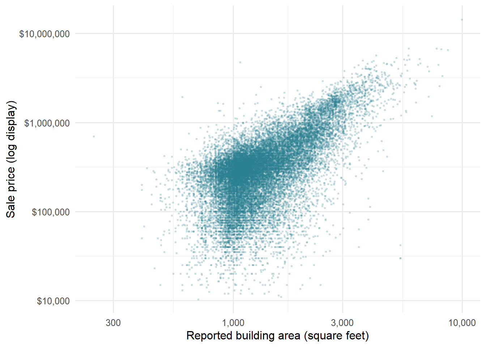
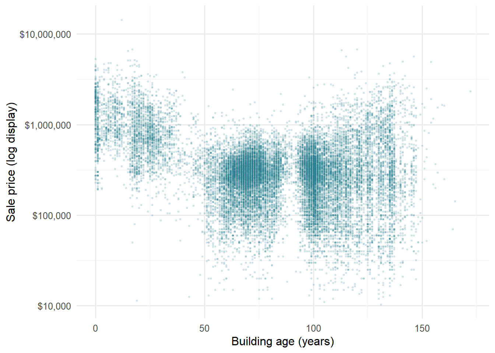
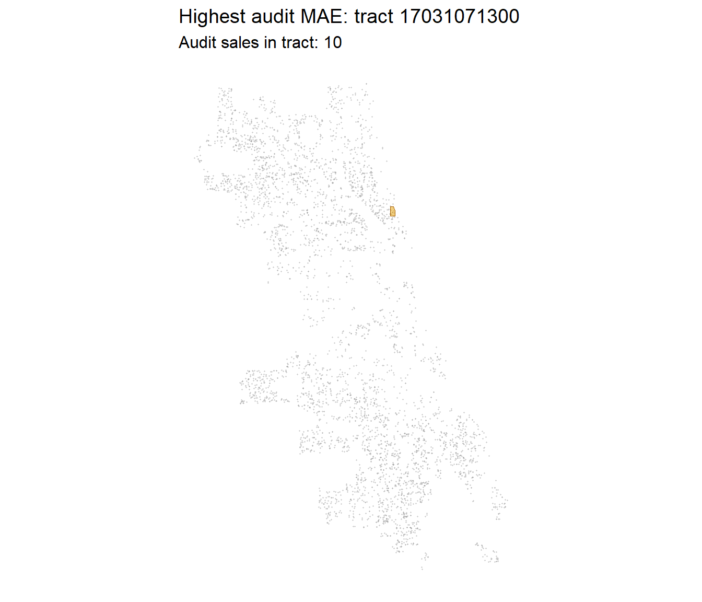

The assignment text below is the supplied brief. Our analysis and answers follow in Parts 1–6. Code is expandable so the findings remain easy to read.
RMSE: error in dollars, emphasizing large errors; lower is better.
Residual: actual minus predicted price; positive means underprediction.
Valuation ratio: predicted divided by actual price; 1 is the benchmark, and 1.20 means 20% overprediction.
Global Moran’s I: one number that describes whether nearby houses have similar errors.
LISA: a local check that shows where similar errors or unusual houses appear on the map.
We compare models using cross-validation (CV). This means fitting a model on some houses and checking its predictions on other houses. We also check a separate audit sample, but we have looked at that sample during development. The instructor’s test score is still unknown.
The assignment
In class we built a house price model for Philadelphia. Now your team does it for a city you haven’t modeled: Chicago.
The Cook County Assessor’s Office has to value every home in the county, including the vast majority that didn’t sell this year. Assessments drive property tax bills. When they’re wrong in a systematic way, some households pay more than their share. A 2017 Chicago Tribune investigation, “The Tax Divide,” found exactly that in Cook County: lower-value homes were assessed at higher shares of their worth than expensive ones.
Build a model that predicts single-family sale prices in Chicago, 2023–2025, using only the tools from this course. The file contains only features of the house itself. Everything about location is yours to build.
A real test
File
What’s in it
chicago_train.csv
About 80% of the houses, with sale prices
chicago_test.csv
The other 20%, without sale prices. You predict them; we score you.
The test houses were held out by house, not by sale, so a house that sold twice is entirely on one side. Your CV RMSE is your estimate. Your test RMSE is the truth. If they’re far apart, something leaked.
Due: Friday, October 30. All teammates renders the file on their portfolio and every member submits that link on Canvas. One teammate uploads team_XX_predictions.csv.
Individual accountability: Q7 on October 30 asks each of you about this model: which features you used and why, your CV and test RMSE, and where the model fails worst. Make sure everyone can explain all of it.
Rules
Important1. Clean training rows once, in Part 1. Never drop test rows.
You must predict every test house, so fill NAs in a feature rather than filtering.
2. Stay inside the time window
Open data from 2023–2025 only.
3. No leakage
Nothing built from sale prices. Would the Assessor have this number for a house that didn’t sell?
4. The outcome stays in dollars
Transform predictors, not sale_price.
5. No prices from the test fold or the future
No features built from other houses’ sale prices.
Please include in your final rendered qmd for this assignment:
Model log
Every model you tried, in order, with CV RMSE and Moran’s I. Each row has a note saying why you tried it.
Features
Incorporate the feature engineering tricks - including the spatial ones covered these past few weeks.
Diagnostics
Residual maps for your baseline and final model, and what changed.
Error analysis
Where your final model fails worst, and whose homes it over-values (Part 4).
Reasoning
Choices justified by evidence from your own analysis.
Local Moran’s I (LISA), local error maps and responsible use of predictions
We adapt these methods to Chicago. We fill missing values using training data, combine areas with few houses, and test distance rings and grid cells. These are our assignment choices, not exact copies of the examples in the notes. Week 8 adds local error checks. It does not change the model formulas or the test predictions. ## Part 0: Setup (provided)
Load the packages and set display options. Modeling functions are defined alongside their use in Part 2.
Code
library(tidyverse)
── Attaching core tidyverse packages ──────────────────────── tidyverse 2.0.0 ──
✔ dplyr 1.2.1 ✔ readr 2.2.0
✔ forcats 1.0.1 ✔ stringr 1.6.0
✔ ggplot2 4.0.3 ✔ tibble 3.3.1
✔ lubridate 1.9.5 ✔ tidyr 1.3.2
✔ purrr 1.2.2
── Conflicts ────────────────────────────────────────── tidyverse_conflicts() ──
✖ dplyr::filter() masks stats::filter()
✖ dplyr::lag() masks stats::lag()
ℹ Use the conflicted package (<http://conflicted.r-lib.org/>) to force all conflicts to become errors
Code
library(tidycensus)library(tigris)
To enable caching of data, set `options(tigris_use_cache = TRUE)`
in your R script or .Rprofile.
Code
library(sf)
Linking to GEOS 3.14.1, GDAL 3.12.1, PROJ 9.7.1; sf_use_s2() is TRUE
Code
library(spdep)
Loading required package: spData
To access larger datasets in this package, install the spDataLarge
package with: `install.packages('spDataLarge',
repos='https://nowosad.github.io/drat/', type='source')`
Code
options(scipen =999)
Code
money <- scales::label_dollar(accuracy =1)pct <- scales::label_percent(accuracy =0.1)theme_set(theme_minimal(base_size =12))# Preview can start in practice/, while project rendering starts one level above.project_root <-if (file.exists("data/assignment5/chicago_train.csv")) "."else".."stopifnot(file.exists(file.path(project_root, "_quarto.yml")))data_dir <-file.path(project_root, "data", "assignment5")report_dir <-file.path(project_root, "reports", "assignment5_modified")dir.create(data_dir, recursive =TRUE, showWarnings =FALSE)dir.create(report_dir, recursive =TRUE, showWarnings =FALSE)
Load both files together (provided)
Build every feature on all_sales, so training and test houses get identical features. Split off train again whenever you add something.
Useful sources: the Chicago Data Portal (find a dataset’s ID under its API button), the Census via tidycensus, and Cook County’s open data.
Part 1: Clean and explore
Decide which training sales are market sales. Record each rule, why, and how many it removed. Then explore: at least four plots, including a map of price.
Some of the smallest buildings have room counts that seem high for their size. One record reports 246 square feet and a $700,000 sale price. We flagged it for further checking rather than removing it. We interpret building_000sf as thousands of square feet based on the column name, but the supplied files do not explain whether it includes basements or other structures.
The houses with the most bedrooms generally have larger building areas. But two pairs have matching values in this table and are flagged as multisales, so we looked more closely at those records.
These records share sale dates and prices, but their locations and some property attributes differ. They are not exact duplicates. Cook County uses is_multisale for transactions involving multiple parcels. A shared price does not tell us what each parcel sold for separately. We assume the course CSV uses the same definition. Assessor’s example, official model documentation.
Code
all_sales %>%st_drop_geometry() %>%count(split, is_multisale) %>%group_by(split) %>%mutate(percent =round(100* n /sum(n), 2))
# A tibble: 4 × 4
# Groups: split [2]
split is_multisale n percent
<chr> <dbl> <int> <dbl>
1 test 0 5509 95.2
2 test 1 280 4.84
3 train 0 21968 94.7
4 train 1 1232 5.31
We exclude the 1,232 training records flagged as multi-parcel sales (5.31%) because their prices may cover several parcels. That leaves 21,968 training observations. We keep every test record and do not set a minimum or maximum price cutoff. A very cheap or expensive sale is not necessarily an invalid one.
We exclude multi-parcel sales from training but retain every test house. We do not remove training sales solely because their prices are unusually low or high.
Sequential cleaning audit; rules apply to training only
stage
remaining
removed_at_step
Original training rows
23200
0
Exclude multi-parcel sales
21968
1232
Exclude missing/nonpositive prices
21968
0
Code
knitr::kable(missing_log, caption ="Missingness before predictor imputation; missing test outcomes are expected")
Missingness before predictor imputation; missing test outcomes are expected
split
variable
missing
test
sale_price
5789
test
num_half_baths
7
test
num_fireplaces
63
test
garage_size
5
test
warmairfurnace
2
train
lotsize_acre
1
train
num_half_baths
38
train
num_fireplaces
349
train
garage_size
11
train
full_basement
2
train
warmairfurnace
7
We treat invalid numbers as missing. Building area must be greater than zero, and the other house measurements cannot be negative. We fill missing values with the median, or middle value, from the houses used to fit the model. In each CV fold, we calculate this median without using the validation houses. Five extra 0/1 columns show whether selected measurements were missing. We keep every test house and never fill in test sale prices.
Exploration plots
We use the cleaned training data to see how prices relate to size, age and location. These plots help us choose what to test in the models. We then use cross-validation to see whether those choices help.
We start by looking at the price distribution. We want to see where most sales fall and how far the highest prices are from the rest. Errors on those expensive houses can have a big effect on RMSE. The labels are in millions, so $1m means $1,000,000. We are only changing the labels, not the prices.
Code
ggplot(st_drop_geometry(train), aes(sale_price)) +geom_histogram(bins =60, fill ="#287D8E", color ="white") +scale_x_continuous(labels = scales::label_dollar(scale =1e-6, suffix ="m")) +labs(x ="Sale price", y ="Sales")
Prices are right-skewed. The dollar-axis histogram retains every cleaned training sale.
Next, we compare building size with price. Do bigger houses sell for more, and how much do prices vary for houses of the same size? We multiply building_000sf by 1,000 to show square feet. The log axes make the smaller values easier to see alongside the larger ones, and transparency helps when points overlap. Our model still predicts prices in dollars. If the relationship looks curved, we have a reason to test a size transformation.
Code
ggplot(st_drop_geometry(train), aes(building_000sf *1000, sale_price)) +geom_point(alpha = .15, size = .6, color ="#287D8E") +scale_x_log10(labels = scales::label_comma()) +scale_y_log10(labels = money) +labs(x ="Reported building area (square feet)", y ="Sale price (log display)")

Building size and price; both display axes are logarithmic. The regression outcome remains dollars.
We also look at price against building age. We want to see whether a straight-line relationship seems reasonable or whether we should test age squared as well. We do not remove a house just because it is old. Again, the log price axis is only for the plot.
Code
ggplot(st_drop_geometry(train), aes(building_age, sale_price)) +geom_point(alpha = .12, size = .6, color ="#287D8E") +scale_y_log10(labels = money) +labs(x ="Building age (years)", y ="Sale price (log display)")

Prices vary widely within building ages; age alone is not a cleaning rule.
Finally, we map the sales to see where higher and lower prices cluster. Each point is a sale, and the color shows its price. If prices vary across the city, we have a reason to test location features alongside house characteristics. The map alone cannot explain why those differences exist. We use a log color scale so a few expensive sales do not dominate the colors.
Cleaned training sales. Color uses a logarithmic price scale; no expensive records are hidden.
Answer: What in your exploration shaped your modeling choices?
Houses of similar size can sell for very different prices. Size alone is therefore not enough. The price map also gives us a reason to test location. These plots do not prove that the relationship is curved. We compare squared size, log size and squared age terms using CV to see which form works better.
We kept the unusually low and high prices because we did not have enough evidence to call them errors. That choice has consequences: expensive sales can drive dollar RMSE, while a relatively small dollar error can be a large percentage of a cheap house’s price. We return to both issues in Part 4.
Part 2: Build the model
Start with a structure-only baseline. Then add features in steps you can learn from, logging each one. Keep the log in a tibble with columns model, added, cv_rmse, moran_i, notes.
Download the 2023 geographic and income data
We use 2023 Census tract boundaries and the 2023 ACS income estimates. A tract is a small statistical area. The income estimates combine survey data from 2019–2023. We use income only to study errors after prediction; it is not a model input. The team still needs to check whether this five-year period is allowed by the assignment’s data rule. The code saves downloaded data locally, but it fits the models again when we render the report. The Census API key stays in the local settings.
Code
options(timeout =240, tigris_use_cache =TRUE)income_file <-file.path(data_dir, "acs_income_2023.rds")tract_file <-file.path(data_dir, "cook_tracts_2023.rds")# These caches contain downloaded source data only, never fitted models or results.if (!file.exists(income_file)) { income_source <-get_acs(geography ="tract", variables ="B19013_001", state ="IL",county ="Cook", year =2023, survey ="acs5", geometry =FALSE )stopifnot(nrow(income_source) >1000)saveRDS(income_source, income_file)}if (!file.exists(tract_file)) { tract_source <- tigris::tracts(state ="IL", county ="Cook", year =2023, cb =TRUE,progress_bar =FALSE ) %>%st_transform(3435)stopifnot(nrow(tract_source) >1000)saveRDS(tract_source, tract_file)}income <-readRDS(income_file) %>%mutate(income =if_else(estimate >0, estimate, NA_real_)) %>%select(GEOID, income)tracts <-readRDS(tract_file) %>%select(GEOID, NAME)
Build spatial features for both splits
Code
# Keep unmatched points. If a point touches two tracts, keep the first match.# distinct() preserves the original house order and one row per input ID.all_sales <-st_join( all_sales, tracts %>%select(tract = GEOID),join = st_intersects,left =TRUE) %>%distinct(id, .keep_all =TRUE)all_sales <-left_join(all_sales, income, by =c("tract"="GEOID"))stopifnot(nrow(all_sales) ==nrow(raw_train) +nrow(raw_test))# The Loop reference is a fixed geographic point, not a price-derived feature.cbd <-st_sfc(st_point(c(-87.6298, 41.8781)), crs =4326) %>%st_transform(3435)xy <-st_coordinates(all_sales)origin <-st_coordinates(cbd)[1, ]all_sales <- all_sales %>%mutate(x_mi = (xy[, 1] - origin[1]) /5280,y_mi = (xy[, 2] - origin[2]) /5280,dist_cbd_mi =sqrt(x_mi^2+ y_mi^2),ring =factor(case_when(dist_cbd_mi <3~"Core", dist_cbd_mi <8~"Inner", TRUE~"Outer"),levels =c("Core", "Inner", "Outer")),grid_raw =paste(floor(x_mi /2), floor(y_mi /2), sep =":"),year_f =factor(year, levels =2023:2025), quarter_f =factor(sale_qrt, levels =1:4))train <- all_sales %>%filter(eligible)test <- all_sales %>%filter(split =="test")stopifnot(nrow(test) ==nrow(raw_test))
Reserve the audit sample
Code
# Grouping by rounded coordinates is a conservative proxy; parcel IDs are unavailable.set.seed(5080)groups <-sample(unique(train$property_group))audit_groups <- groups[seq_len(ceiling(length(groups) * .2))]development <- train %>%filter(!property_group %in% audit_groups)audit <- train %>%filter(property_group %in% audit_groups)
Fill missing values and create the CV groups
We use the grouped CV loop from Week 7. Records that may describe the same property stay in one fold. A fold is one group of houses used for validation. In prepare(data, reference), reference contains only the fitting rows. The function uses these rows to calculate medians and decide which area categories have enough houses. [[v]] selects the column named by v.
An area needs at least 15 different property groups to keep its own category. Smaller areas become Other. If no area is small, we put the smallest area in Other so the model can learn a value for that category. New areas also use Other. We repeat this process using all cleaned training rows before predicting the test houses.
Code
structure_vars <-c("building_000sf", "building_age", "lotsize_acre", "num_bedrooms","num_full_baths", "num_half_baths", "num_fireplaces", "garage_size", "central_air","one_story", "full_basement", "finished_basement", "brick_stone_ext", "warmairfurnace")# Fill values from fitting rows only, not validation or test rows.prepare <-function(data, reference) { data <-st_drop_geometry(data) reference <-st_drop_geometry(reference)for (v in structure_vars) {# Treat invalid numeric values as missing; preserve every validation/test row. invalid_data <-!is.finite(data[[v]]) invalid_reference <-!is.finite(reference[[v]])if (v =="building_000sf") { invalid_data <- invalid_data | data[[v]] <=0 invalid_reference <- invalid_reference | reference[[v]] <=0 } else { invalid_data <- invalid_data | data[[v]] <0 invalid_reference <- invalid_reference | reference[[v]] <0 } data[[v]][which(invalid_data)] <-NA_real_ reference[[v]][which(invalid_reference)] <-NA_real_ fill <-median(reference[[v]], na.rm =TRUE)stopifnot(is.finite(fill))if (v %in%c("num_half_baths", "num_fireplaces", "garage_size", "full_basement", "warmairfurnace")) { data[[paste0(v, "_missing")]] <-if_else(is.na(data[[v]]), 1, 0) } data[[v]] <-replace_na(data[[v]], fill) }# Learn category pooling from this fitting sample, never validation counts.# Reserve a populated Other category so unseen places have a fitted fallback.for (v inc("tract", "grid_raw")) { counts <-tibble(place = reference[[v]], property_group = reference$property_group) %>%distinct(place, property_group) %>%count(place) keep <- counts %>%filter(!is.na(place), n >=15) %>%pull(place) has_other <-any(is.na(reference[[v]]) |!reference[[v]] %in% keep)if (!has_other &&length(keep) >0) { least_common <- counts %>%arrange(n, place) %>%slice_head(n =1) %>%pull(place) keep <-setdiff(keep, least_common) } destination <-if (v =="tract") "tract_fe"else"grid_fe" mapped <-if_else(!is.na(data[[v]]) & data[[v]] %in% keep,as.character(data[[v]]), "Other") data[[destination]] <-factor(mapped, levels =c("Other", sort(keep))) } data}# Week 7's group-to-fold lookup, retaining the existing seeded group order.make_folds <-function(data) {set.seed(5080) unique_properties <-sample(unique(data$property_group))stopifnot(length(unique_properties) >=10) property_folds <-rep(1:10, length.out =length(unique_properties)) property_folds[match(data$property_group, unique_properties)]}folds <-make_folds(development)stopifnot(length(intersect(development$property_group, audit$property_group)) ==0)validation_samples <-tibble(sample =c("Development: model comparison", "Audit: previously inspected", "All cleaned training", "Instructor test: no outcomes"),rows =c(nrow(development), nrow(audit), nrow(train), nrow(test)),property_groups =c(n_distinct(development$property_group), n_distinct(audit$property_group),n_distinct(train$property_group), n_distinct(test$property_group)))knitr::kable(validation_samples, caption ="Roles and sizes of the evaluation samples")
Roles and sizes of the evaluation samples
sample
rows
property_groups
Development: model comparison
17567
15820
Audit: previously inspected
4401
3956
All cleaned training
21968
19776
Instructor test: no outcomes
5789
5224
Specify the candidate models
Each formula is written out as f0, f1, and so on, as in the notes. I(x^2) adds a squared term, factors add place or time categories, and building_000sf:ring adds the size-by-ring interaction. log1p(lotsize_acre) means log(1 + lotsize_acre), which is defined at zero. We also compare cubic coordinate terms as an extension of the notes’ squared-term approach.
Define cross-validation and residual spatial diagnostics
The spatial diagnostic follows Week 7: knearneigh(k = 5) → knn2nb() → nb2listw(style = "W"). Duplicate coordinates use the notes’ use_kd_tree check rather than artificial coordinate offsets. Moran’s I values therefore differ from the earlier 8-neighbor symmetric definition. The same weights are used for every candidate in this run.
Code
# Week 7's prediction loop, with fitting-fold imputation added.cv_predictions <-function(formula, data, fold_id) {stopifnot(nrow(data) ==length(fold_id), !anyNA(fold_id)) predictions <-rep(NA_real_, nrow(data))for (k insort(unique(fold_id))) { validation_rows <- fold_id == k fitting <-prepare(data[!validation_rows, ], data[!validation_rows, ]) validating <-prepare(data[validation_rows, ], data[!validation_rows, ])# Check factor coverage as in Week 6. category_vars <-c("tract_fe", "grid_fe", "ring", "year_f", "quarter_f")for (v in category_vars) { training_levels <-unique(as.character(fitting[[v]])) validation_levels <-unique(as.character(validating[[v]])) unseen_levels <-setdiff(validation_levels, training_levels)if (length(unseen_levels) >0) {stop("A validation category is absent from the fitting rows.") } } fit <-lm(formula, data = fitting, na.action = na.fail)stopifnot(!anyNA(coef(fit))) predictions[validation_rows] <-predict(fit, newdata = validating) }stopifnot(all(is.finite(predictions))) predictions}make_weights <-function(data) { coords <-st_coordinates(data) house_knn <-knearneigh(coords, k =5, longlat =FALSE,use_kd_tree =anyDuplicated(coords) ==0) house_nb <-knn2nb(house_knn)nb2listw(house_nb, style ="W")}moran_i <-function(values, weights) {moran(values, weights, n =length(values), S0 =Szero(weights))$I}
Fit and compare the candidates
Code
weights <-make_weights(development)
Warning in knearneigh(coords, k = 5, longlat = FALSE, use_kd_tree =
anyDuplicated(coords) == : knearneigh: identical points found
Code
# Evaluate the formula list as in Week 7.cv_results <-lapply(models, function(f) { predictions <-cv_predictions(f, development, folds) errors <- development$sale_price - predictionslist(pred = predictions, rmse =sqrt(mean(errors^2)))})model_log <-imap_dfr(cv_results, function(result, model_name) {tibble(model = model_name,cv_rmse = result$rmse,moran_i =moran_i(development$sale_price - result$pred, weights) )}) %>%mutate(added = notes,notes ="Same grouped folds, development sample; pooled dollar RMSE" ) %>%select(model, added, cv_rmse, moran_i, notes)# Add the zero-bound alternatives using the notes' add_row() pattern.raw_names <-names(models)for (model_name in raw_names) { bounded_name <-paste0(model_name, "_nonnegative") models[[bounded_name]] <- models[[model_name]] predictions <-if_else(cv_results[[model_name]]$pred <0, 0, cv_results[[model_name]]$pred) errors <- development$sale_price - predictions cv_results[[bounded_name]] <-list(pred = predictions,rmse =sqrt(mean(errors^2)) ) model_log <- model_log %>%add_row(model = bounded_name,added =paste("Same formula as", model_name, "; constrain predicted values to >= $0"),cv_rmse =sqrt(mean(errors^2)),moran_i =moran_i(errors, weights),notes ="Domain constraint; all 12 alternatives evaluated on the same held-out predictions" )}knitr::kable(model_log %>%mutate(cv_rmse =money(cv_rmse), moran_i =round(moran_i, 3)),caption ="All tried specifications, in order: development-sample grouped 10-fold CV")
All tried specifications, in order: development-sample grouped 10-fold CV
model
added
cv_rmse
moran_i
notes
M0_structure
House attributes only; benchmark
$284,790
0.371
Same grouped folds, development sample; pooled dollar RMSE
M1_curved_time
Size/age curvature, log lot area, timing and missingness
$266,223
0.403
Same grouped folds, development sample; pooled dollar RMSE
M2_log_size
Alternative: log size instead of quadratic size
$307,256
0.405
Same grouped folds, development sample; pooled dollar RMSE
M3_downtown
Straight-line distance to the Loop
$258,365
0.414
Same grouped folds, development sample; pooled dollar RMSE
M4_distance_curve
Allow downtown distance to bend
$256,566
0.417
Same grouped folds, development sample; pooled dollar RMSE
M5_rings
Preset 3/8-mile distance categories
$260,298
0.415
Same grouped folds, development sample; pooled dollar RMSE
M6_spatial_surface
Quadratic east/north spatial trend
$234,828
0.369
Same grouped folds, development sample; pooled dollar RMSE
M7_cubic_surface
Test a more flexible cubic spatial trend
$225,139
0.342
Same grouped folds, development sample; pooled dollar RMSE
M8_tract_effects
2023 Census tract intercepts; sparse tracts pooled
$232,554
0.288
Same grouped folds, development sample; pooled dollar RMSE
M9_tract_size_ring
Let size slopes vary by distance ring
$219,181
0.268
Same grouped folds, development sample; pooled dollar RMSE
M10_tract_surface
Combine tract intercepts, size interactions and spatial surface
$202,544
0.197
Same grouped folds, development sample; pooled dollar RMSE
M11_grid_effects
Alternative 2-mile grid intercepts
$195,542
0.197
Same grouped folds, development sample; pooled dollar RMSE
M0_structure_nonnegative
Same formula as M0_structure ; constrain predicted values to >= $0
$284,361
0.372
Domain constraint; all 12 alternatives evaluated on the same held-out predictions
M1_curved_time_nonnegative
Same formula as M1_curved_time ; constrain predicted values to >= $0
$266,218
0.403
Domain constraint; all 12 alternatives evaluated on the same held-out predictions
M2_log_size_nonnegative
Same formula as M2_log_size ; constrain predicted values to >= $0
$306,796
0.406
Domain constraint; all 12 alternatives evaluated on the same held-out predictions
M3_downtown_nonnegative
Same formula as M3_downtown ; constrain predicted values to >= $0
$258,340
0.414
Domain constraint; all 12 alternatives evaluated on the same held-out predictions
M4_distance_curve_nonnegative
Same formula as M4_distance_curve ; constrain predicted values to >= $0
$256,563
0.417
Domain constraint; all 12 alternatives evaluated on the same held-out predictions
M5_rings_nonnegative
Same formula as M5_rings ; constrain predicted values to >= $0
$260,298
0.415
Domain constraint; all 12 alternatives evaluated on the same held-out predictions
M6_spatial_surface_nonnegative
Same formula as M6_spatial_surface ; constrain predicted values to >= $0
$234,768
0.368
Domain constraint; all 12 alternatives evaluated on the same held-out predictions
M7_cubic_surface_nonnegative
Same formula as M7_cubic_surface ; constrain predicted values to >= $0
$225,032
0.341
Domain constraint; all 12 alternatives evaluated on the same held-out predictions
M8_tract_effects_nonnegative
Same formula as M8_tract_effects ; constrain predicted values to >= $0
$232,528
0.288
Domain constraint; all 12 alternatives evaluated on the same held-out predictions
M9_tract_size_ring_nonnegative
Same formula as M9_tract_size_ring ; constrain predicted values to >= $0
$219,128
0.268
Domain constraint; all 12 alternatives evaluated on the same held-out predictions
M10_tract_surface_nonnegative
Same formula as M10_tract_surface ; constrain predicted values to >= $0
$201,904
0.195
Domain constraint; all 12 alternatives evaluated on the same held-out predictions
M11_grid_effects_nonnegative
Same formula as M11_grid_effects ; constrain predicted values to >= $0
$195,488
0.197
Domain constraint; all 12 alternatives evaluated on the same held-out predictions
Features and validation design
House features: size, age, rooms and other supplied measurements. We also test squared terms, log lot area, year and quarter categories, and flags for missing values.
Location features: distance from a fixed point in the Loop, rings at 3 and 8 miles, coordinate terms, Census tracts and 2-mile grid cells. Grid cells are not official neighborhoods. Each fitting sample decides which small area categories to combine; sale prices are not used for this decision.
Interactions: the size–price relationship can differ by distance ring. Area fixed effects give each area its own starting price level, also called an intercept.
We use 17567 sales to compare models and hold out 4401 for the audit. Every candidate uses the same 10 development folds. We round longitude and latitude to five decimal places to keep likely repeat-property records together. No coordinate group appears in both development and audit. Without parcel IDs, though, we cannot confirm that this catches every repeat sale. Nearby houses can still fall in different folds.
Each out-of-fold prediction comes from a model that did not fit that house’s fold. We square all these errors, take their mean, and then take the square root to get RMSE in dollars. This is different from averaging ten separate fold RMSEs. For the spatial check, each house has five nearby houses as neighbors. Their weights add to one. We use the same locations and weights for all models, so the comparisons are fair.
Earlier versions of the 12 formulas gave some negative test predictions. We therefore also compare versions that replace negative predictions with zero. We use the same rule in CV, the audit sample and the test file. For a positive sale price, replacing a negative prediction with zero always reduces squared error. This is a rule about possible house values, not new information learned by the model. We had already looked at the audit sample before adding this rule, so the audit is not a completely independent check. We do not use audit scores to choose the winning formula.
The ACS income figures cover 2019–2023. We use them only to describe income-related error patterns, not to predict prices, because they were released after some of these sales. We use 2023 tract boundaries throughout. Our random grouped splits test predictions for other houses in the observed period; they do not test forecasting a later year.
knitr::kable(audit_scores %>%mutate(across(c(rmse, mae), money)),caption ="Separate audit subset; previously inspected during development, so not fully independent")
Separate audit subset; previously inspected during development, so not fully independent
Actual minus out-of-fold prediction on the identical development sample. Positive means underprediction. Colors saturate at the common 95th percentile of absolute errors; all points remain shown.
Answer: What helped most, and what disappointed you?
Code
# Compare matched specifications; each contrast states exactly what changed.comparison_pairs <-tibble(from =c("M0_structure", "M1_curved_time", "M1_curved_time", "M3_downtown","M1_curved_time", "M8_tract_effects", "M9_tract_size_ring"),to =c("M1_curved_time", "M2_log_size", "M3_downtown", "M4_distance_curve","M8_tract_effects", "M9_tract_size_ring", "M11_grid_effects"),change =c("Combined curvature, timing, missingness and lot transformation","Replace quadratic size with log size", "Add linear downtown distance","Add squared downtown distance", "Add tract intercepts","Add rings and size-by-ring interactions","Replace tract intercepts with grid intercepts"))comparisons <- comparison_pairs %>%left_join(model_log %>%select(from = model, rmse_before = cv_rmse, i_before = moran_i), by ="from") %>%left_join(model_log %>%select(to = model, rmse_after = cv_rmse, i_after = moran_i), by ="to") %>%mutate(rmse_reduction = rmse_before - rmse_after,proportional_reduction = rmse_reduction / rmse_before)knitr::kable(comparisons %>%select(change, rmse_before, rmse_after, proportional_reduction, i_before, i_after) %>%mutate(across(c(rmse_before, rmse_after), money),proportional_reduction =pct(proportional_reduction),across(c(i_before, i_after), ~round(.x, 3))),caption ="Matched raw-model comparisons. Positive RMSE reduction means improvement; negative means deterioration.")
Matched raw-model comparisons. Positive RMSE reduction means improvement; negative means deterioration.
change
rmse_before
rmse_after
proportional_reduction
i_before
i_after
Combined curvature, timing, missingness and lot transformation
We chose M11_grid_effects_nonnegative because it had the lowest development CV RMSE: $195,488. The baseline RMSE was $284,790, so the reduction was 31.4%. The model log describes this model as Alternative 2-mile grid intercepts. Its full formula is shown above. We also replace negative predictions with zero.
The largest improvement in the comparison table came from Add tract intercepts. RMSE fell from $266,223 to $232,554, or 12.6%. Some comparisons change several features together. For example, M1 adds more than squared terms, so we cannot say that squared terms alone caused its improvement.
Replacing quadratic size with log size changed RMSE from $266,223 to $307,256: a deterioration of $41,033. Baseline-to-selected residual Moran’s I changed from 0.371 to 0.197. Positive Moran’s I indicates clustering of similar errors; it does not identify the cause. RMSE and spatial clustering measure different weaknesses.
On the separate audit sample, RMSE was $204,104, compared with $272,054 for the baseline. We had looked at this sample before finishing the prediction rule, so it is not a fully independent final test. This is the best model among the options we tried, not the best possible model.
We leave out the lot-size missing-value flag because it does not vary in the development sample. The model cannot learn an effect from a column that is always zero. We still fill missing lot size with the fitting-sample median. The other five missing-value flags stay in the models.
Part 4: Where it fails, and who pays
4A. Where does your final model fail worst? Is it guessing too high or too low there, and why do you think so?
4B. Assessors judge their work with the ratio of predicted value to sale price. A ratio above 1 means the home is over-valued and its owner over-taxed. Does your model’s ratio differ by neighborhood income? Connect your answer to your Part 1 cleaning rules and to “The Tax Divide.”
knitr::kable(worst %>%mutate(across(c(sale_price, pred, residual), money)),caption ="Largest absolute errors in the audit subset")
Largest absolute errors in the audit subset
id
tract
sale_price
pred
residual
building_000sf
income_group
18374
17031081800
$2,550,000
$6,173,065
-$3,623,065
7.957
Higher
14999
17031081401
$3,336,000
$6,842,758
-$3,506,758
8.168
Middle
23464
17031081800
$2,400,000
$4,347,845
-$1,947,845
6.239
Higher
6817
17031071600
$4,800,000
$2,938,865
$1,861,135
4.024
Higher
9698
17031060200
$3,537,000
$1,676,139
$1,860,861
3.435
Middle
654
17031080100
$3,750,000
$5,579,361
-$1,829,361
7.160
Higher
15214
17031071300
$1,100,000
$2,898,490
-$1,798,490
4.990
Higher
28734
17031832600
$4,400,000
$2,770,849
$1,629,151
3.517
Higher
26807
17031071000
$4,053,857
$2,466,060
$1,587,797
3.767
Higher
15297
17031061500
$1,375,000
$2,851,346
-$1,476,346
4.582
Higher
Code
knitr::kable(head(geographic_errors, 10) %>%mutate(across(c(mae, mean_residual), money)),caption ="Highest audit MAE by tract, restricted to at least 10 audit sales")
Highest audit MAE by tract, restricted to at least 10 audit sales
tract
n
mae
mean_residual
17031071300
10
$684,612
-$510,917
17031832600
15
$494,970
-$40,590
17031160700
16
$354,816
-$354,816
17031050500
13
$349,116
$302,164
17031210100
12
$326,052
-$223,621
17031221600
11
$318,923
$291,827
17031060300
10
$238,982
$6,072
17031832500
10
$227,559
-$134,977
17031832400
10
$201,810
-$190,443
17031160200
10
$196,743
$13,657
Code
knitr::kable(fairness %>%mutate(median_income =money(median_income),across(c(baseline_median_ratio, median_ratio, change_in_distance_from_one, aggregate_ratio), ~round(.x, 3)),share_overvalued =pct(share_overvalued), mae =money(mae)),caption ="Audit valuation ratios by tract-income group; counts are sales, not residents")
Audit valuation ratios by tract-income group; counts are sales, not residents
Median predicted/observed price ratios in the audit subset. A ratio above 1 indicates overprediction, not a directly calculated tax bill.
4A. Among tracts with at least 10 audit sales, tract 17031071300 had the largest MAE: $684,612. MAE is the average size of an error, ignoring its sign. This tract had 10 audit sales. Its mean residual was -$510,917, so predictions were too high on average. The map below shows its location. This ranking describes our audit sample; it does not prove which area has the worst errors across all homes.
The largest individual error was record 18374. It sold for $2,550,000, but the model predicted $6,173,065. Missing information about condition, unusual luxury houses or incorrect area measurements could explain large errors. These are possible explanations, not proven causes. Audit Moran’s I was 0.178. A positive value means similar errors tend to occur nearby, but the value alone is not a significance test. Predicting a later year or a completely new area could be harder than our current validation task.
Code
worst_boundary <- tracts %>%filter(GEOID == geographic_errors$tract[1])ggplot() +geom_sf(data = audit, color ="grey65", size = .2, alpha = .4) +geom_sf(data = worst_boundary, fill ="#E69F00", color ="#A65E00", alpha = .5) +coord_sf(datum =NA) +labs(title =paste("Highest audit MAE: tract", geographic_errors$tract[1]),subtitle =paste("Audit sales in tract:", geographic_errors$n[1]),x =NULL, y =NULL)

Highest-MAE eligible tract highlighted within the study’s sales footprint; no neighborhood name is inferred from a tract code.
Week 8: Where do similar errors occur?
Global Moran’s I gives one number for all houses. Local Moran’s I, used in LISA, helps us find the places that need a closer look. We compare the baseline and final model on the same development houses, using the same five-neighbor weights. Each prediction was made without fitting that house’s CV fold. This is an extra diagnostic, not a new predictor or a new model-selection rule.
We first subtract the mean error from each residual. This is called centering. High means above the mean error; low means below it. We then compare each house with its neighbors.
Group
Meaning
High-High
The house and its neighbors have errors above the mean
Low-Low
The house and its neighbors have errors below the mean
High-Low
The house is above the mean, but its neighbors are below it
Low-High
The house is below the mean, but its neighbors are above it
Not flagged
The local test did not flag one of these four patterns
High-High and Low-Low are local clusters. The other two groups are spatial outliers: houses that differ from their neighbors. Low-Low does not automatically mean overprediction. We must also check whether the actual residual is negative.
Baseline and final local error groups on the same houses. Flags use unadjusted permutation p-values below 0.01. Grey does not mean the prediction is accurate.
The baseline has 322 Low-Low flags; the final model has 225. High-High flags change from 324 to 129. These counts show local patterns, not how large the dollar errors are. As Week 8 explains, lower RMSE does not always mean fewer local clusters.
The test uses 499 randomized comparisons for each house and a p-value threshold of 0.01. We use a two-sided test so both clusters and spatial outliers can be flagged. We do not adjust the p-values for the large number of tests. Some flags may therefore occur by chance. These maps help us choose places to investigate; they do not prove a cause. Not flagged also does not mean correct.
Local error patterns by area income
This next table uses the final model’s development CV errors. The valuation-ratio tables above use the separate audit sample. Their sample sizes differ, so their percentages answer different questions. We use the same income cutoffs in both tables.
Code
lisa_income <- lisa_results %>%filter(model =="Final") %>%st_drop_geometry() %>%mutate(income_group =factor(case_when(is.na(income) ~"Unknown", income <= cuts[1] ~"Lower", income <= cuts[2] ~"Middle", TRUE~"Higher"),levels =c("Lower", "Middle", "Higher", "Unknown"))) %>%group_by(income_group) %>%summarize(houses =n(),low_low =sum(group =="Low-Low"),low_low_share =mean(group =="Low-Low"),low_low_and_overpredicted =sum(group =="Low-Low"& residual <0),.groups ="drop" )knitr::kable(lisa_income %>%mutate(low_low_share =pct(low_low_share)),caption ="Local flags by tract income. The final column counts Low-Low houses whose prices were actually overpredicted.")
Local flags by tract income. The final column counts Low-Low houses whose prices were actually overpredicted.
income_group
houses
low_low
low_low_share
low_low_and_overpredicted
Lower
6498
50
0.8%
50
Middle
5777
49
0.8%
49
Higher
5230
115
2.2%
115
Unknown
62
11
17.7%
11
The Low-Low share is 0.8% in lower-income areas and 2.2% in higher-income areas. These are patterns in this sample, not a test of the difference between income groups. Area income does not tell us an individual owner’s income.
A cluster gives us a question to investigate. For example, condition, vacancy or access to services might matter. We would need suitable data from the allowed period before adding a new feature. We would then compare models using the same CV folds. We do not use neighboring sale prices or the instructor’s hidden test prices to build a feature.
4B. We divide Cook County tracts into three income groups, using cutoffs of $64,413 and $94,315. These groups contain roughly equal numbers of tracts, not equal numbers of houses or residents. The lower-income group’s median ratio was 1.019, compared with 1.005 for the higher-income group. The difference was 0.014 ratio units, with the lower-income group’s ratio higher.
Compared with 1, these medians show 1.9% overprediction in the lower-income group and 0.5% overprediction in the higher-income group. A higher ratio does not always mean overprediction: both ratios could be below 1. These results describe the sample; we have not tested whether the group difference is statistically significant.
The baseline and final ratios use the same audit sales. In the table, a negative change in distance from 1 means that the group’s median ratio improved. This does not mean every house improved. The aggregate ratio is the sum of predictions divided by the sum of sale prices. It gives more weight to expensive houses than the median individual ratio does.
We also check the cheapest quarter of audit sales. Its median ratio was 1.55, showing 55.0% overprediction. Cheap houses and low-income areas are not the same group. Lower dollar RMSE does not guarantee small percentage errors for cheap houses. Also, models often predict extreme prices closer to the middle. Grouping by actual price can show this pattern even without discrimination.
We kept cheap sales because a low price alone does not show that a sale is wrong. We removed multi-parcel sales because one price may cover several properties. Our audit therefore does not show how well the model predicts those bundled test transactions. Like the Tax Divide discussion, we ask whether cheap homes receive larger errors relative to their prices. These are prediction checks, not actual tax calculations or proof that income causes the errors. The Tax Divide investigation.
An area’s income is not the same as an owner’s income. ACS income estimates also have sampling error. Across all input rows, 1 houses had no tract match. We kept those houses and did not give them income from a nearby tract.
Part 5: Predict the test houses (provided)
Refit your final recipe on all training sales, then predict every test house. Set f_final to your final formula.
Code
# The final model was fitted in Part 3. Use training-only predictor imputation.# Test outcomes are deliberately not checked or filled.preds <-tibble(id = test$id, pred =predict(m_final, newdata = final_test))if (endsWith(best_name, "_nonnegative")) preds$pred <-if_else(preds$pred <0, 0, preds$pred)stopifnot(nrow(preds) ==nrow(test), !anyDuplicated(preds$id),identical(preds$id, test$id), identical(preds$id, raw_test$id), all(is.finite(preds$pred)), all(preds$pred >=0))knitr::kable(head(preds), caption ="First six exported predictions")
write_csv(model_log, file.path(report_dir, "model_log.csv"))write_csv(preds, file.path(report_dir, "team_XX_predictions.csv"))review_predictions <- test %>%st_drop_geometry() %>%select(id, building_000sf, building_age, tract, is_multisale) %>%left_join(preds, by ="id") %>%filter(pred ==0)write_csv(review_predictions, file.path(report_dir, "predictions_needing_review.csv"))knitr::kable(review_predictions, caption ="Zero-valued test predictions requiring review; none removed from the export")
Zero-valued test predictions requiring review; none removed from the export
id
building_000sf
building_age
tract
is_multisale
pred
367
1.023
131
17031681100
0
0
802
0.880
127
17031843800
0
0
1568
0.966
109
17031671800
0
0
1924
0.800
135
17031612000
0
0
2109
0.941
72
17031421200
1
0
2822
0.792
103
17031671500
0
0
3013
0.860
104
17031681100
0
0
3686
1.029
109
17031671600
0
0
3778
0.915
97
17031680500
0
0
4914
0.748
135
17031681100
0
0
9041
0.970
105
17031670100
0
0
9065
0.957
123
17031681100
0
0
9767
1.078
135
17031500300
0
0
10416
0.748
135
17031681100
0
0
12443
0.642
126
17031671200
0
0
18460
0.747
131
17031680600
1
0
18824
0.885
50
17031835500
0
0
20939
0.915
98
17031680500
0
0
21422
1.018
59
17031440202
0
0
Our model-selection grouped 10-fold CV RMSE is $195,488. The separate audit RMSE is $204,104. We will only know the instructor’s test RMSE after scoring.
We save the predictions to reports/assignment5_modified/team_XX_predictions.csv, with all 5789 test IDs in their original order. We still need to replace XX with our team number before uploading. The zero bound affects 19 predictions. Those houses need review: zero is a sign that the model has failed for those records, not a believable house value. We do not cap high predictions or add a positive price floor.
Part 6: Reflection (about 300 words, as a team)
Read one coefficient twice: once as β̂, once for what it does to ŷ.
Would you hand this model to the Assessor? What would you warn them about?
We started with house features and then tested location. Similar houses can have different prices in different parts of Chicago. Our selected model is M11_grid_effects_nonnegative. Its features help prediction, but they do not prove what changing a house would cause.
The central_air coefficient is -$3,366. If 0 means no central air and 1 means central air, beta-hat is the estimated price difference when the other inputs stay the same. For y-hat, changing 0 to 1 adds this amount to the raw prediction. A $300,000 prediction becomes $296,634. The zero bound can change this difference near zero. We still need to confirm the source coding. This coefficient does not tell us the return from installing air conditioning, because condition and renovations may also differ.
We would not use this model for real assessments yet. The cheapest quarter of audit sales has a median ratio of 1.55, or 55.0% overprediction. Week 8 adds another check: LISA shows where similar errors occur. Low-Low means below the mean error, so we also check the actual error signs. Neither a good RMSE nor a local flag proves that an assessment is fair.
Week 8 also asks how people use predictions. Even an accurate model needs clear rules, human review and a way for owners to question errors. We use public data and supplied house records; we do not use competitors’ private pricing data.
We kept extreme prices unless we had evidence to remove them, but excluded bundled transactions. The audit was viewed during development, so it is not a fully independent test. Before real use, we would check later years, new areas and missing property details. The zero predictions need review because they are model failures, not believable house values. ### Who did what
Name
Main contribution
Frederick Abalo
Initial data inspection and cleaning discussion.
Other teammates (to complete)
Add each member’s contribution before submission.
AI Team Statement
What was your team’s AI policy and how was AI used in this assignment?
We used AI assistance to write and debug R code, compare model specifications, draft explanations, review validation and interpretation, write simpler explanations, and add local error checks, and check code and prediction files. We also simplified the code against the Week 1–8 notes and reran the analysis. Team review and confirmation that this use follows the course policy are still pending. We will record our agreed AI-use policy before submission.
WarningSubmission checklist
We still need to add our team number, names and contributions, confirm the course AI policy and the permitted ACS time window, verify the central-air coding, and review the results together. The zero-valued predictions and the overvaluation of low-price homes need particular attention. The instructor’s test score is not available yet.